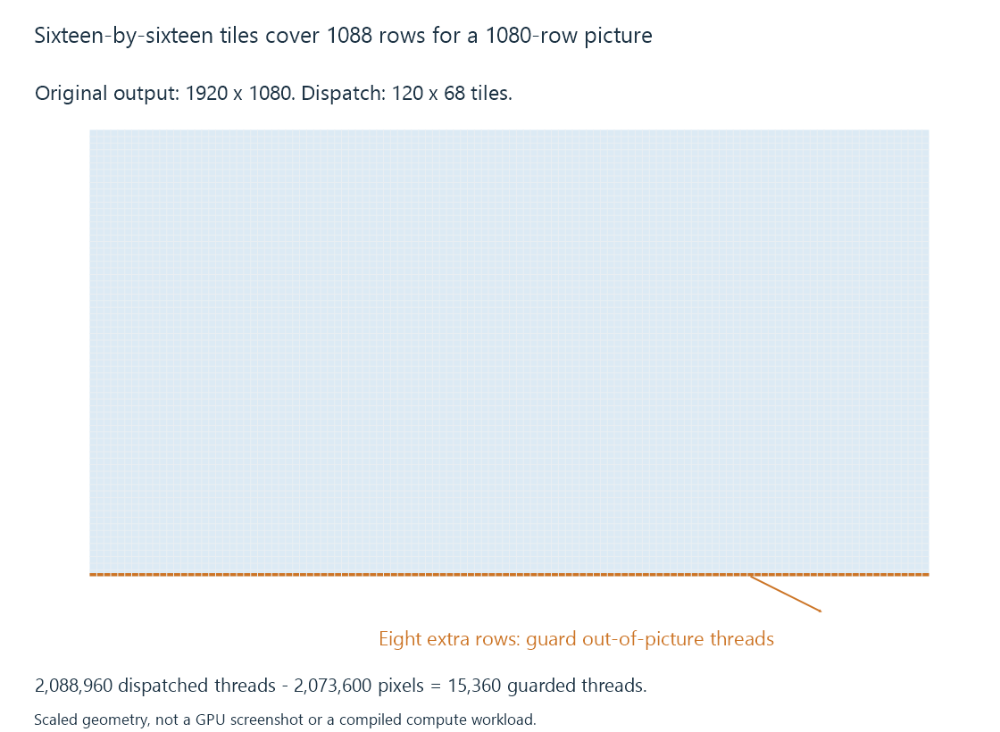

GPU compute and video processing
GPU compute processes picture data with programmable parallel work whose layout, colour interpretation and completion requirements connect it to the surrounding media pipeline.
A GPU can run programmable work over picture data: scaling, colour transformations, composition and other algorithms. The application supplies the processing logic and the GPU executes suitable work in parallel.
This is a different role from a dedicated decoder, which reconstructs compressed pictures. The GPU-processing step usually starts from a usable picture representation produced by decoding or another filter.
Picture operations expose parallel work
Many operations can calculate an output pixel from an input neighborhood independently of other output pixels. That gives the GPU a large set of related tasks.
A scaling filter, for example, maps each output coordinate into the source and obtains the needed samples. An overlay operation combines source picture and overlay information. Dependencies and memory traffic still depend on the chosen algorithm.

Consider a conceptual 1920 × 1080 output dispatched in 16 × 16 tiles:
Horizontal tiles = ceil(1920 / 16) = 120
Vertical tiles = ceil(1080 / 16) = 68
Threads = 120 × 68 × 256 = 2,088,960
Output pixels = 1920 × 1080 = 2,073,600
Extra threads = 15,360
The dispatch covers 1088 rows. Its final eight rows fall outside the output picture.
An original conceptual kernel therefore includes a bounds decision:
x, y = this thread's output coordinate
if x >= width or y >= height:
return
output[x, y] = transform(input, x, y)
The expression is pseudocode, not a real CUDA or Metal API. It illustrates how dispatch geometry and the picture's bounds cooperate.
The processor needs the right picture meaning
A hardware surface can have several planes, padded rows or a device-specific layout. A filter must use the representation its interface actually accepts.
Colour meaning is another input. Transfer function, range, matrix and primaries determine what the stored values represent. A texture format describing channel storage does not supply all those properties.
For HDR-to-SDR conversion, a processing path needs the intended tone-mapping relationship, not just a faster way to change sample numbers.
Producer and consumer work need an order
GPU launches and media operations can complete asynchronously. A filter cannot read a picture still being written by its decoder, and an encoder cannot consume a result still being written by the filter.
Streams, command dependencies and completion objects coordinate those uses. A host API returning quickly can mean work was queued; it does not necessarily mean the transformed picture is ready.
An Emby session can therefore use a hardware decoder, programmable GPU filtering and a hardware encoder while still having CPU-side coordination. The route describes the work of each stage.
Order affects the visible result
Scaling a picture after painting a subtitle scales the painted text along with it. Scaling first and composing the subtitle in output coordinates can produce a different text size and edge appearance.
Similarly, applying a colour operation to nonlinear stored values can produce a different result from processing in a suitable linear-light representation. GPU execution accelerates the selected algorithm; it does not select the intended image operation on the application's behalf.
See Also
- Fixed-function media engines
- The hardware decode-filter-encode pipeline
- NVIDIA CUDA in media processing
- Metal for video processing
- Intel video processing (VPP)
- Media filter graphs